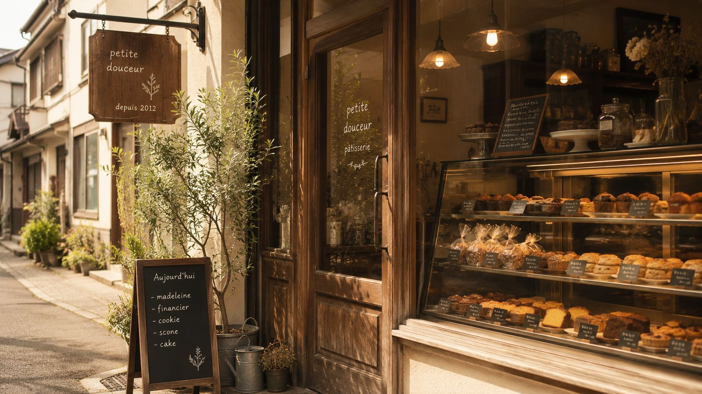
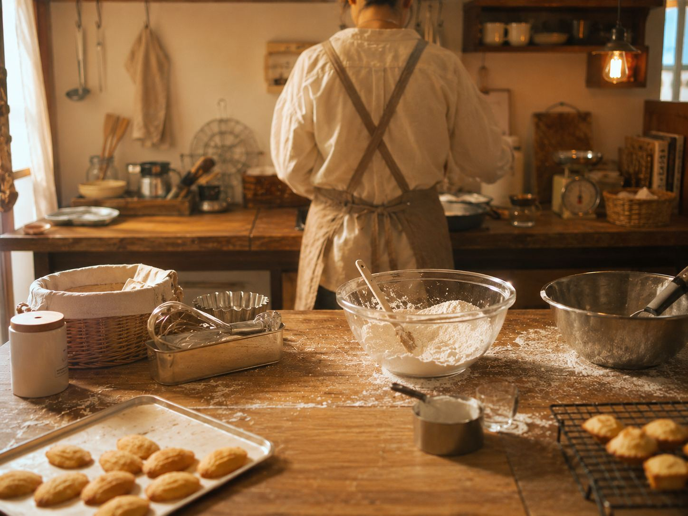
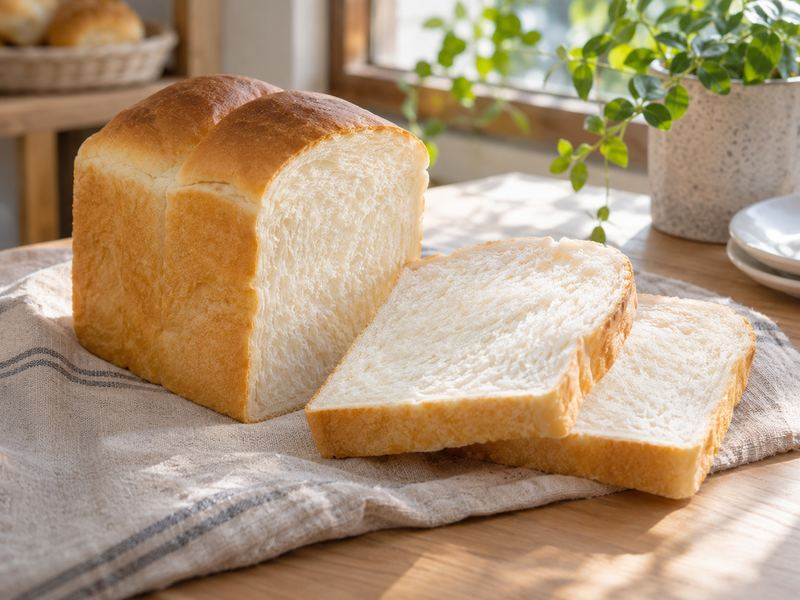
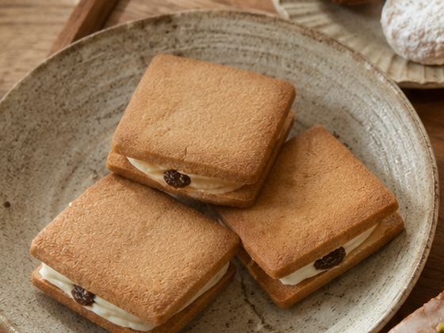
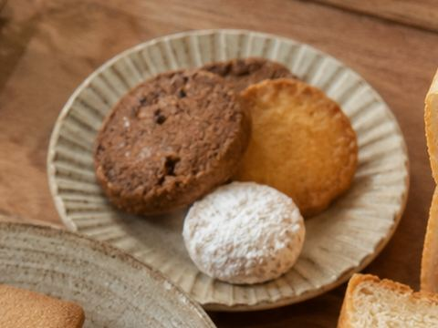

petite douceur｜焼き菓子とパンの店｜◯◯駅 東口から徒歩8分
今日も、
小さな窯から。
家族3人で営む、町の小さな焼き菓子店です。毎朝5時から仕込み、焼きあがった分から店頭に並べます。
| 8:00 | 食パン・ハーフサイズ食パン |
|---|---|
| 10:00 | どうぶつパン・バターサンド・焼き菓子 |
| 14:00 | 午後の焼き菓子・2回目の食パン売り切れた商品を焼き直します（日によって変わります） |
営業8:00〜18:00（売り切れ次第終了） 定休火曜日

朝5時から、夕方6時まで。
お店の一日を、時間の順にご案内します。焼き上がりに合わせてお越しいただくと、選べる商品が多くなります。
-
5:00仕込み

祖母の代から、受け継いできた味。
祖母のレシピを、少しずつ今の味に整えながら焼いています。特別な日より、「今日も食べたい」と思ってもらえるおやつを目指しています。
- 仕込む量その日に焼く分だけ
- 牛乳近所の牛乳屋さんから
- 卵地元の農家さんから
-
8:00開店・食パン

開店と同時に、食パンが並びます。
朝食にちょうどいい、軽やかな口どけの角食パンです。食べきりやすい半分のサイズもあります。
- 毎日の食パン
- 1斤 480円
- ハーフサイズ食パン
- 半斤 260円
-
10:00焼き菓子・どうぶつパン

いちばん人気は、バターサンド。
発酵バターのクリームに、ほろ苦いキャラメルを合わせました。厚めに焼いたクッキーで挟んだ、シンプルな組み合わせです。
- バターサンド
- 1個 320円
- フィナンシェ
- 1個 240円
- ガレット・ブルトンヌ
- 1枚 260円
どうぶつパン
表情は、ひとつずつ手で描いています。なくなり次第終了です。

※写真はイメージです（AIで生成）。手で描くため、日によって表情が少しずつ違います。 - くまのチョコパン
- 220円
- ねこのカスタードパン
- 240円
- ひよこのメロンパン
- 200円
- かめのメロンパン
- 260円
-
14:00午後の焼き上がり

売り切れた商品を、もう一度焼きます。
午前中に売り切れた焼き菓子と、2回目の食パンが並びます。贈り物には、5種類を詰め合わせた箱入りのセットもあります。焼く商品は日によって変わるため、Instagram（@petite_douceur・架空）でお知らせしています。
- 季節の焼き菓子セット
- 1,480円
-
17:00翌日の予約の締め切り
確実に買いたい日は、予約・お取り置きを。
- ご予約は、受け取りの前日17時まで受け付けます。
- 当日のお取り置きは、閉店（18:00）までにお受け取りください。
- お電話（8:00〜17:00）か、予約フォームからどうぞ。
-
18:00閉店
お店に来る前に。
- 営業時間
- 8:00〜18:00（売り切れ次第終了）
- 定休日
- 毎週火曜日
- 住所
- 〒000-0000 ◯◯県◯◯市◯◯町 1-2-3
◯◯駅 東口から徒歩8分 - 電話
- 000-0000-0000（8:00〜17:00）
- 駐車場
- お店の前に2台
店頭の黒板から
- 季節の焼き菓子セットが、秋の内容に変わりました。
- 10月の定休日は、毎週火曜日です。臨時休業はありません。
- ご予約・お取り置きの受付時間を、営業時間内に変更しました。